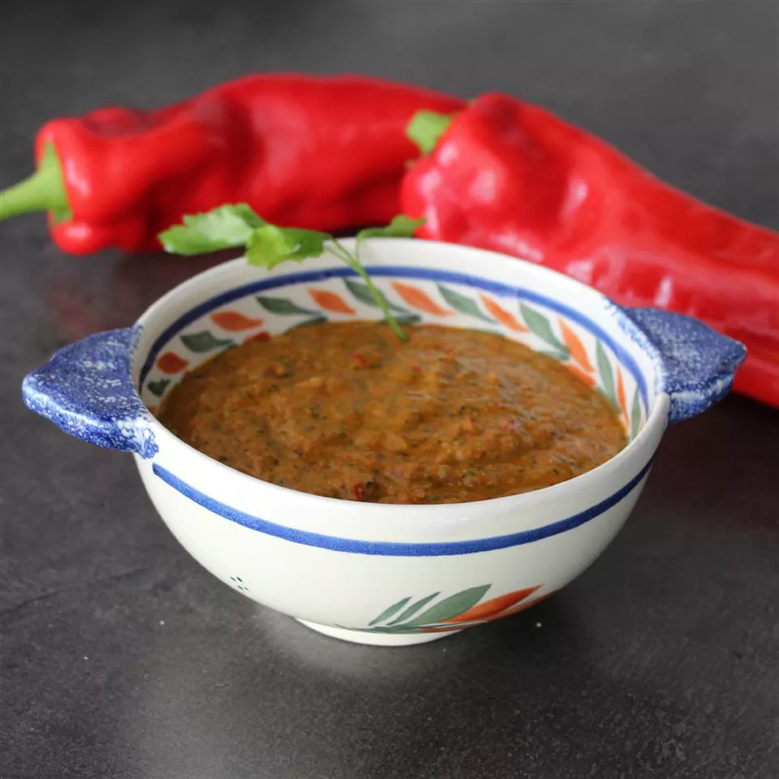

Red Mojo Sauce

Originated in the Canary Islands, this sauce can be used to top potatoes, served with fresh bread rolls, or served with white gouda cheese or goat cheese cubes. This sauce, whether mild or spicy, is a delightful addition to any meal. You may add lime juice and or curry for added taste!
Ingredients
- 2 large bell peppers,cut into chunks
- 3 cloves garlic
- 1 tablespoon sweet paprika
- 1 bunch fresh cilantro
- 1 cup olive oil
- 1 chile pepper
- 2 slices bread,crusts removed
Steps
- Place all the ingredients for the green mojo sauce or red mojo sauce into your blender or Nutribullet and blend until everything is thoroughly broken down and you've got a thick sauce. If you're using a blender, you might have to give it a bit of a shake to move the ingredients around before they'll blend properly.
- Pour the mojo sauce into a sterilised jar and keep in the fridge for up to two months.